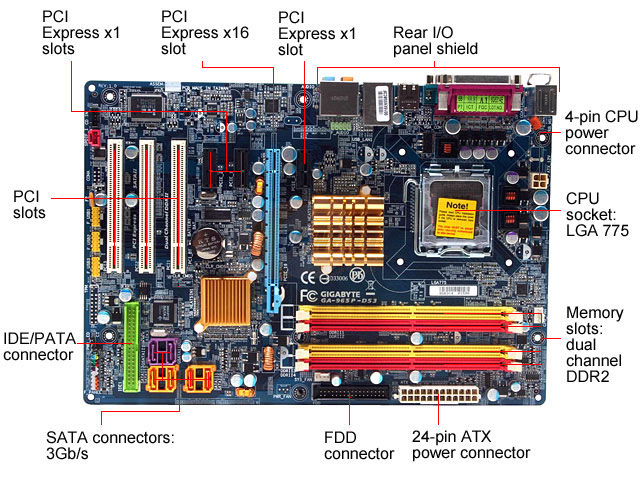

ATX=,nato a partire dal Baby AT, è a tutt'oggi il formato di scheda madre più comune in commercio. FLEX ATX=una variante di microATX che permette maggior flessibilità nel progetto della scheda madre e nel posizionamento dei componenti. Mini-ATX - quasi identico all'ATX, ma leggermente più piccolo. MicroATX - un ATX ridotto, con tre soli slot di espansione PCI o PCI express. La sigla ATX (dall'Inglese Advanced Technology Extended) è uno standard diffuso che riguarda il case, la scheda madre e l'alimentatore di un Personal Computer. Questo standard fu definito inizialmente da Intel nel 1995, rivisto nel febbraio del 1997 con la release 2.01 che apporta delle leggere modifiche alla precedente versione 2.0. e nuovamente nel 2003 con la release 2.2, che oggi (2013) è la più recente. Il precedente standard AT definiva in maniera generica le strutture per i PC-AT di IBM; questo standard fornisce invece delle indicazioni più specifiche, considerando le dimensioni della scheda madre, la posizione degli slot, dei fori per il fissaggio della scheda madre al case, dell'alimentatore e del contenitore, le posizioni e il colore dei connettori e il collegamento dell'alimentazione.